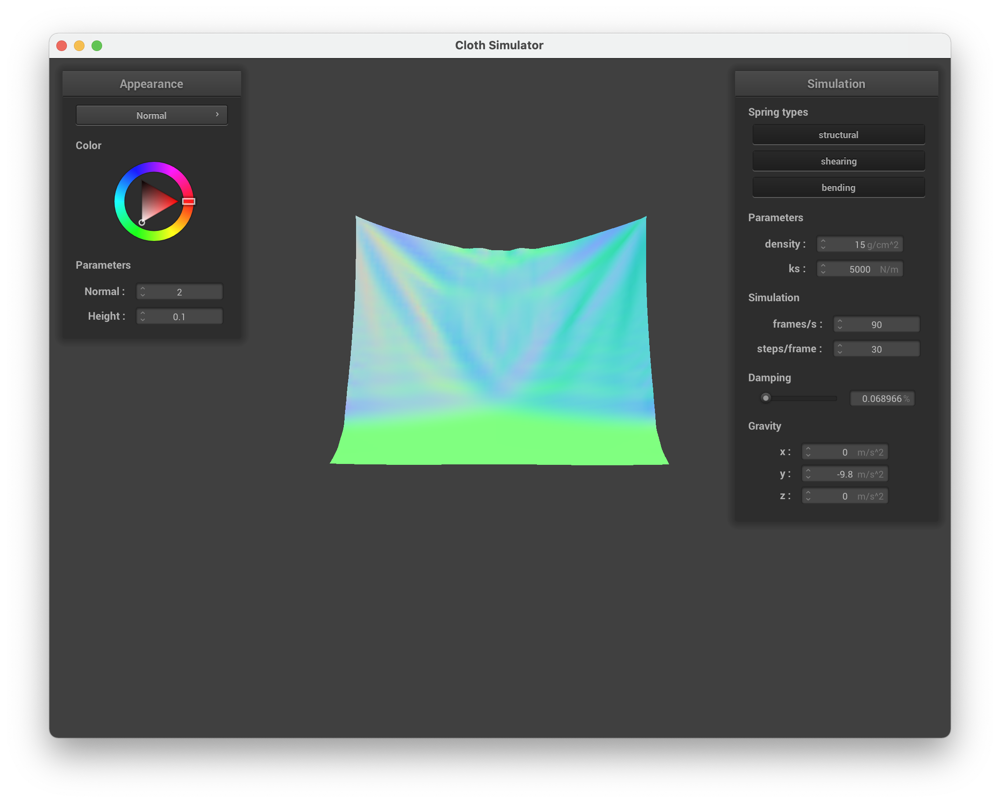

CS 184: Computer Graphics and Imaging, Spring 2022
Project 4: Cloth Simulator
David Wei & Alina Wang, CS184-!!
Overview
In this project, we were tasked with implementing a spring representation of a cloth object. We had to setup the structure of the object using springs and point masses, and then learned how to collide them with other objects (including itself).
Finally, we had to dabble with OpenGL to create shaders and shading effects.
The most challenging part of this project was in managing pointers and addresses. There were times where we would forget to dereference our point masses, or call copies of point masses instead of the point mass itself. This would lead to errors where
our changes would not take affect, or in the case of self-collisions, duplicate point-masses. The map also introduced many challenges, as initializing it with pointers to pointers was quite difficult to figure out. Aside from that, the vector
arithmetic was challenging to understand at first, but became much easier throughout the project.
We worked well as a team, contributing equally to the codebase/debugging. It was often the case where after pair programming, one of us would be confused by a certain line of code, which would end up introducing a bug. This allowed us to debug
quite efficiently.
Part 1: Masses and springs
|
Mesh full view
|
More zoomed in...
|
|
Even more zoomed in...
|
Zoomed in a LOT
|
In Part 1, we generated the spring representation of a cloth mesh. We generated the number of point masses as specified by num_width_points and num_height_points.
We made sure to set them appropriately within the given gridspace, however, since we accidentally skipped this step on our first implementation and were unable to see the entire
mesh.
Using pointers was a little tricky, but after correctly placing the point masses it was not too difficult to add the springs and appropriate constraints. We were able to
locate point masses using the 2D indexing trick we learned in past projects and would store the "neighbor" point mass positions in Vector3Ds to make spring creation easier.
|
Mesh without any shearing constraints
|
 Mesh with only shearing constraints
Mesh with only shearing constraints
|
Mesh with all constraints
|
Part 2: Simulation vs Numerical Integration
|
High ks = 100000 N/m
|
High ks = 100000 N/m
|
 High ks N/m
High ks N/m
|
|
Start: Low ks = 500 N/m
|
Middle: Low ks = 500 N/m
|
End: Low ks = 500 = N/m
|
Low ks = 500 N/m. High ks = 100000 N/m. Default = 5000 N/m.
A lower spring constant means that the material is easier to stretch while higher spring constant means the material is harder to stretch.
From our images, you can see in the higher ks simulation where the cloth looks closer to paper falling onto a wall. The cloth has less ripples overall as it falls.
In their resting states, you can see the difference in stretchiness. WHere the cloth with a lower ks looks like it's sagging a bit and not perfectly in a square.
Whereas the cloth with a higher ks looks more square and has less ripples at resting than the default settings.
|
Start High Density = 300 g/cm^2
|
Middle High Density = 300 g/cm^2
|
End High Density = 300 g/cm^2
|
|
Start Low Density = 1 g/cm^2
|
Middle Low Density = 1 g/cm^2
|
 End Low Density = 1 g/cm^2<
End Low Density = 1 g/cm^2<
|
Low Density = 1 g/cm^2. High Density = 300 g/cm^2. Default = 15 g/cm^2
A higher density means the material is heavier. And vice versa.
The cloth with the higher density falls with more downward motion. Whereas the cloth with lower density lays itself against the plane.
In the resting state, you can see the cloth with higher density sagging more. Whereas the one with lower density closer to a square shape with less ripples.
|
High Damping Start
|
High Damping Middle
|
High Damping End
|
|
Low Damping Start
|

Low Damping Middle
|
Low Damping End
|
Low damping = 0.068966. High Damping = 1.0. Default = 0.2.
A lower damping rate means less energy is lost during the motion. So the one with a higher damping rate has the most energy loss as the cloth falls.
Which is why the cloth with higher damping falls much slower. And it comes to rest on the plane. The cloth with a lower damping rate has less energy loss as it falls.
So it falls much faster, with more rippling across the cloth as it falls.
It also falls past the plane, as can be seen in the last photo of our lower damping simulation, and sways back and forth along the plane.
Before coming to a rest like in the higher damping simulation rest state.
|
Pinned4.json at Resting State!
|
Pinned4.json at Resting State!
|
Part 3: Handling Collisions with other objects
|
Sphere collision
|
Plane collision (wireframe)
|
In part 3, we were tasked with handling collisions between our mesh and other objects.
Implementing sphere collision was not too challenging, since we were given a point and radius calculating the bounds of the sphere was relatively simple.
We would check if the distance between a point mass and the origin of the sphere was within the radius of the sphere, and if it was, would bump the point mass to the surface.
Implementing plane collision was much more difficult. It took us a bit of time to figure out how to calculate the intersection point between a point mass in the mesh and the plane.
We had to review our knowledge of plane geometry, and derived a way to pull out a variable t in accordance with lines in 3D space.
|
Derivation of intersection point, note that xyz_1 should be direction and not point.
|
After implementation, here are some of our simulations with ks set to different values! Also here are some different shaders using part 5.
|
Default ks = 5000
|
ks = 500
|
ks = 50000
|
|
Plane with texture mapping shader
|
Plane with mirror shader
|
Part 4: Handling Self-Collisions
|
Start Default Settings
|
Middle Default Settings
|
End Default Settings
|
In part 4, we were tasked with implementing self collisions.
This part was challenging in the construction of our map / 3d boxes, since the vector arithmetic at the end built upon our previous knowledge. We were struggling
for quite some time with correct pointer and vector initialization, which would cause our map to either not populate correctly and throw seg-faults, or populate duplicate point masses.
After figuring out the map, however, the rest of the implementation became relatively straightforward.
As you can see above, our cloth will fold over itself as it falls onto the plane. Although our end rest state is slightly different than spec, the behavior is identical.
It rests upon the plane and will slowly unravel a corner, but only within 10 to 20 seconds. It will come to a rest, but has the slight jiggle effect of jelly.
Changing Density and ks
 Start Density = 300 g/cm^2
Start Density = 300 g/cm^2
|
Middle Density = 300 g/cm^2
|
End Density = 300 g/cm^2
|
|
Start Density = 1 g/cm^2
|
 Middle Density = 1 g/cm^2
Middle Density = 1 g/cm^2
|
End Density = 1 g/cm^2
|
In the images above, you will notice that when we change the density parameter, there is an inverse relationship between density and number of observable folds/ripples.
With a higher density of 300 g/cm2, there are many folds and ripples as the cloth falls onto the plane. With a density of 1 g/cm2, however, there are much less ripples and folds.
If anything, the density appears to correlate with rigidity. The less dense, the more rigid, the more dense, the less rigid. The 1 g/cm2 looks more like an actual cloth, while the 300 g/cm2
looks more like jelly or rice paper.
 Start ks = 100000
Start ks = 100000
|
Middle ks = 100000
|
End ks = 100000
|
|
Start ks = 500
|
Middle ks = 500
|
End ks = 500
|
In the figures above, we change the ks instead of the density. The effect that ks has on the cloth is similar to the effect that density has on the cloth,
except where the rigidity/folds/ripples have an inverse relationship with density, they appear to have a direct relationship with ks. As ks grows larger, there are less folds and
the cloth seems more rigid. Likewise, with a lower ks, the ripples are more apparent and the cloth seems less rigid.
Part 5: Shaders
Shader programs run in parallel with GPUs while telling the computer how to render a pixel.
Fragment shaders compute what color to color each pixel. Vertex shaders compute the location of vertices and producing any physical details
such as the normal vector. Together, the shaders produce the required details to render live images correctly.
|
Ambient Lighting Only
|
Diffuse Lighting Only
|
|
Specular Lighting Only
|
Complete Blinn Phong Model
|
Blinn Phong Shading Model: Light can be modeled as a combination of 3 types of lighting: specular, ambient, and diffuse.
Calculating the correct amount of light reflected in a specific direction (specular light) requires calculating the halfway vector (the vector halfway between the view direction and light directon).
As a result, the closer the halfway vector is to the normal, the more specular contribution there will be.
 My own Texture!
My own Texture!
|
|
Cloth Bump with our Texture
|
Ball Bump with our texture
|
|
Cloth Displacement with our Texture
|
 Ball Displacement with our texture
Ball Displacement with our texture
|
Having run the -o 16 -a 16 and -o 128 -a 128 command several times, our the cloth reacts the same under both settings.
However, the sphere shape looks smoother and rounder using 128 instead of 16.
Regardless of smoothness or roundness, the cloth still falls onto the ball in the same manner under both settings.